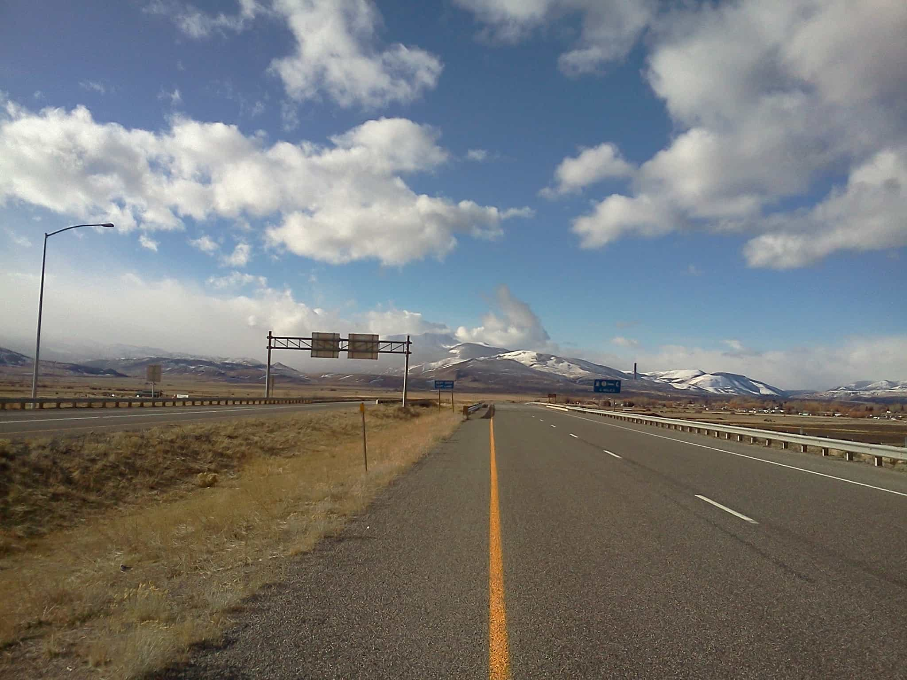

< < < Back
What Hitchhiking Taught Me About Picking Up Girls – Return Of Kings
Last year, I went on a hitchhiking trip across America that lasted six months and took me across sixteen states from New York to the West Coast. It was a wild, harrowing and disturbing trip, and while I wouldn’t recommend hitchhiking to everyone, it’s a great idea if you’re looking for adventure and excitement. In particular, hitchhiking has a disturbing number of parallels with game. Here’s just a few…
1. Looks matter.
Most “career” hitchhikers are slobs: they don’t shower and dress in raggedy, filthy, torn clothing. This isn’t even getting into their love of piercings, dreadlocks and other ugly facial accouterments. Who the hell would let a guy who has flies buzzing around him to get high into their car? I had a much easier time than most hitchhiking because I looked like a normal, everyday guy: I showered every day, wore clean, fresh clothes and cut my hair once a week. I lost count of the number of people who told me something to the effect of, “You’re the first hitchhiker I’ve ever picked up, because you don’t look like a bum.” In fact, there was one incident in Minnesota where a dirty Deadhead had been trying to get a ride for two hours; hitching from the same spot, I got a ride in five minutes.
If you’re looking to get laid, you need to look good. You don’t need to be an Adonis, but you need to at least put some effort into your appearance. No woman will be attracted to an unkempt slob.
2. Location matters.
The ease of hitchhiking in the U.S. largely depends on where you are. Even if you follow all the rules I lay out in my recent book, The Hitchhiking Crash Course, in some places you’re just plain going to have a hard time getting a ride. In places like Central New York and eastern Washington state, the average driver would rather set himself on fire than give a ride to a stranger, no matter what he looks like. In contrast, in places like Iowa and Montana, people will offer to give you a lift even when you aren’t looking for one. Additionally, if you’re in a place known for life-threatening weather, such as North Dakota in December, motorists will offer to pick you up so you don’t “fucking freeze!”
Likewise, some cities and countries are so wretched—either because of fattitude, sausage fests and antisocial attitudes—that even if you’re a master at the game, you’re going to have a difficult time. You’re better off focusing on places where women are agreeable and attractive and the deck isn’t stacked against you.

3. It’s a numbers game…
Hitchhiking is best described as short bursts of action separated by long stretches of boredom. As a thumber, it’s your job to sift through the drivers who pass by you, signalling them all until one of them pulls over and tells you to hop in. The majority of motorists will never deign to pick you up no matter what, so it’s your obligation to keep trucking until you find the ones who will help you out.
The same goes with women. Unless you become famous, the majority of girls on Earth will never be interested in you, so you have no choice but to approach until you find the ones that do.
4. …that you will win so long as you persist.
There was more than one point during my trip where it felt like I would never get out of wherever I was. When you’re stuck for a whole weekend in a grimy coal-mining town in the middle of nowhere, you start to go a little crazy. But despite all the obstacles the world threw in my path, I persevered and made it all the way to Oregon. It took pulling some insane stunts at points, but I made it.
Again, the same goes with girls. Unless you are completely hopeless (and few men are), there is at least one woman out there who will have sex with you because of who you are right now. Don’t let the fact that you haven’t achieved your personal goals yet stop you from seeking her out.
Read More: One Man Has Found The Secret To Banging Argentine Girls


{kind=link}
{kind=link}
{kind=link}
{kind=link}